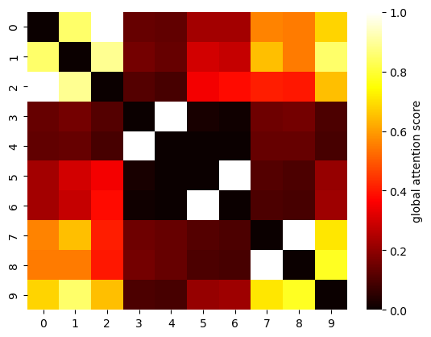

Learning Sparse Feature-Interaction Graphs
with Attention-Based GNNs
Phaphontee Yamchote
Advisor: Asst. Prof. Thanapon Noraset, Ph.D.
Co-advisor: Chainarong Amornbunchornvej, Ph.D.
Scroll to explore
Why Feature Interactions Matter
Understanding how features relate in tabular data
The Core Insight
- Features in tabular data rarely act independently
- Interaction effects can be crucial for accurate prediction
- Traditional methods often miss complex feature relationships
- Understanding interactions improves both accuracy and interpretability
Feature Interaction Example
The Problem with Complete Graphs
Feature-graph GNNs treat each feature as a node
🚫 Complete Graph Issues
- $O(2^{d^2})$ edges grow quadratically with features
- Most edges represent no real interaction
- Noise from irrelevant edges hurts prediction
- Computationally expensive for large feature sets
🎯 What We Want
- A sparse graph with only meaningful edges
- Better interpretability through visible structure
- Maintained or improved prediction accuracy
Complete Graph: 45 edges (d=10)
Research Questions
Can attention-based GNNs reveal interaction structure?
RQ1: Discovery
Can an attention-based GNN trained on a dense graph reveal the important interaction edges?
RQ2: Pruning
Can we prune weak edges and keep only the meaningful structure?
RQ3: Performance
Can a sparse graph maintain or improve predictive performance?
Key Hypothesis: Attention weights from GNN training provide a signal about which feature pairs exchange useful information for prediction.
Controlled Study Setting
Synthetic dataset with known ground-truth interactions
Why Synthetic Data?
- Ground-truth interaction groups are exactly known
- Can objectively measure if method recovers true structure
- Controlled validation before real-world application
- Removes confounding factors from noisy real data
Target function
(m = 10,000 samples, d = 10 features, xj ~ U[−1,1]):
$$y = \frac{1}{1+x_{0}^{2}+x_{1}^{2}+x_{2}^{2}} + \sqrt{\exp{(x_3+x_4)}} + |x₅+x₆| + x₇x₈x₉$$
Dataset Properties
Features
10
Complete edges
45
Ground-truth edges
8
Interaction groups
4
Ground-Truth Interaction Structure
Note: Groups {x₀,x₁,x₂} and {x₇,x₈,x₉} are 3-way (higher-order) interactions. Pairwise edges serve as proxies: all members within a group should be mutually connected via edges to capture the higher-order structure.
Method Overview
A simple score → prune → retrain pipeline
Complete Graph
All pairwise edges
Train GNN
TransformerConv
Extract & Prune
Score + Threshold
Step 1: Initialize
Start with complete feature graph containing all $\frac{d(d-1)}{2}$ possible edges
Step 2: Train
Train one-layer attention-based GNN (TransformerConv) on prediction task
Step 3: Prune
Extract attention scores, apply threshold τ, retrain on sparse graph
Method Pipeline Overview
Edge Scoring Mechanism
From attention coefficients to symmetric MF scores
Step 1: Aggregate Attention
Average over training set S and all heads H:
$$\overline{A}_{ij} \;=\; \frac{1}{|\mathcal{S}|\,H} \sum_{x\in\mathcal{S}} \sum_{h=1}^H \alpha^{(h)}_{ij}(x)$$
Step 2: Symmetrize
Combine both directions (undirected pair):
$$M_{ij} \;=\; \tfrac{1}{2}\big(\overline{A}_{ij} + \overline{A}_{ji}\big)$$
Step 3: Normalize → MF Score
Min-max over all unordered pairs:
MFij = (Mij − min) / (max − min) ∈ [0, 1]
Why This Design?
✓ Symmetric
Treats edges as undirected interactions
✓ Normalized
Min-max enables intuitive threshold selection
✓ Simple
No per-edge hyperparameter tuning
Pruning & Retraining
Global threshold to create sparse structure
Global Threshold Rule
Keep edge (i, j) if:
$$MF_{ij}\geq \tau$$
Two-Stage Process
- Extract MF scores from trained attention weights
- Apply single global threshold τ to all edges
- Create sparse graph with only kept edges
- Retrain model on pruned graph
Key Benefit
Simple, transparent, and interpretable. No complex per-edge decisions—just one threshold.
Key Results
Edge recovery at threshold τ = 0.68
Precision
0.89
Recall
1.00
F1 Score
0.94
Edge Count Comparison
Global attention score heatmap (MF matrix)

| Model | MAE |
|---|---|
| Null (no edges) | 0.397 |
| Complete (45 edges) | 0.088 |
| Pruned (9 edges) | 0.072 |
| Oracle (8 edges) | 0.070 |
18% lower MAE than complete graph
Ablation: Partial Interaction Groups (avg MAE, 10 runs)
$$y = \frac{1}{1+x_{0}^{2}+x_{1}^{2}+x_{2}^{2}} + \sqrt{\exp{(x_3+x_4)}} + |x₅+x₆| + x₇x₈x₉$$
| Included groups | MAE |
|---|---|
| {x₃,x₄}, {x₅,x₆}, {x₇,x₈,x₉} | 0.079 |
| {x₀,x₁,x₂}, {x₃,x₄}, {x₇,x₈,x₉} | 0.091 |
| {x₅,x₆}, {x₇,x₈,x₉} | 0.101 |
| {x₀,x₁,x₂}, {x₇,x₈,x₉} | 0.117 |
| {x₀,x₁,x₂}, {x₃,x₄}, {x₅,x₆} | 0.155 |
Visual Comparison
Complete vs Ground Truth vs Learned Structure
Complete Graph
45 edges — all C(10,2) pairs
Ground Truth
8 edges — 4 interaction groups
Learned (Pruned)
9 edges (8 true + 1 FP)
✓ All 8 true edges recovered + 1 false positive
Learned graph closely mirrors ground truth structure
Discussion Insights
Why the method works and what the results tell us
Why Pruning Improves Accuracy
The complete graph exposes all pairwise channels, including many weak or noisy edges. Pruning removes them, reducing variance in message passing and simplifying the hypothesis space. Result: MAE 0.072 vs. 0.088 (complete).
Attention Heatmap Reveals Groups
The MF heatmap shows clear bright blocks at {x₀,x₁,x₂}, {x₃,x₄}, {x₅,x₆}, {x₇,x₈,x₉}—recovering the true group structure from attention alone. Dense within-group connectivity emerged without explicit higher-order operators.
Spurious Edges Are Infrequent
One spurious edge {x₁,x₉} appeared in the recovered set. Features can co-vary under the generative process or share downstream effects during training. Precision 0.89 confirms such false positives are rare.
Complexity vs Fit Trade-off
Important: This theoretical context motivates the work, but the core contribution is the empirical demonstration that attention-guided pruning recovers meaningful structure.
Limitations
Honest assessment of the controlled study
⚠️ Single Synthetic Dataset
Validated on one controlled dataset only. Real-world tabular/CTR datasets with unknown ground truth are needed before making broad generalizability claims.
⚠️ Model-Dependent Attention Scores
Attention scores are specific to TransformerConv. Different architectures may score edges differently; weak interaction effects may not surface in the attention signal.
⚠️ Spurious Edges Possible
One false edge {x₁,x₉} appeared—features co-varying under the generative process can inflate attention scores. Precision is 0.89, not 1.0.
⚠️ Threshold Needs Ground Truth
τ is selected by maximizing edge-level F₁ against known interaction pairs. No automatic threshold selection strategy for real-world settings (no ground truth) is yet proposed.
Scope of Validation
Future Directions
Next steps for broader impact
Stability Selection Without Ground Truth
Replace the ground-truth threshold with data-driven stability selection, enabling reliable edge pruning on real-world datasets where oracle labels are unavailable.
Structural Priors & Regularizers
Combine attention scores with structural priors (e.g., sparsity regularization, domain constraints) to bias the discovered graph toward known interaction patterns.
Higher-Order (Hyperedge) Scoring
Extend MF scoring to explicitly model hyperedges, directly capturing three-way or k-way interactions instead of approximating them through pairwise proxy edges.
Scaling & Real-World Benchmarks
Conduct scaling studies for larger feature dimensions and noisier regimes; benchmark on tabular and CTR datasets to validate generalization beyond the synthetic setting.
Conclusion
Key Takeaway
A simple global threshold on an attention-derived score (MF) recovers most true interaction edges (Precision 0.89, Recall 1.00, F₁=0.94) and creates a compact graph (9 vs. 45 edges) with lower prediction error than the complete graph.
✓ Method
Score–Prune–Retrain: one-layer TransformerConv → symmetrized MF score → global threshold τ → retrain from scratch on pruned graph.
✓ Results
9 edges recovered vs. 45 (complete) and 8 (oracle). MAE 0.072 (pruned) vs. 0.088 (complete) vs. 0.070 (oracle) vs. 0.397 (null).
✓ Insight
Removing noisy edges reduces message-passing variance. Pairwise attention proxies suffice to recover higher-order group structure in this controlled setting.
Thank You
Questions?
Phaphontee Yamchote
Advisor: Asst. Prof. Thanapon Noraset, Ph.D.
Co-advisor: Chainarong Amornbunchornvej, Ph.D.